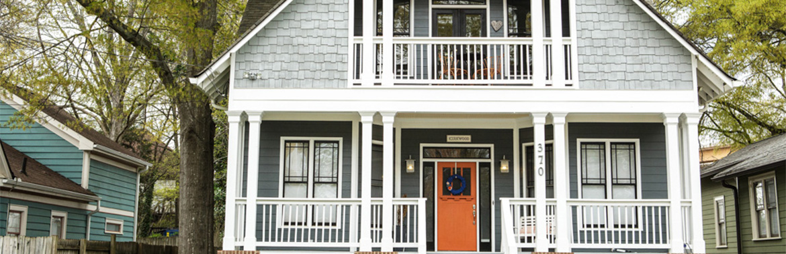
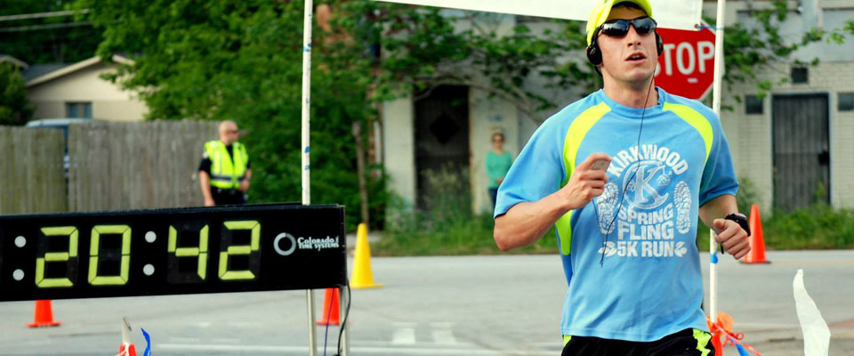
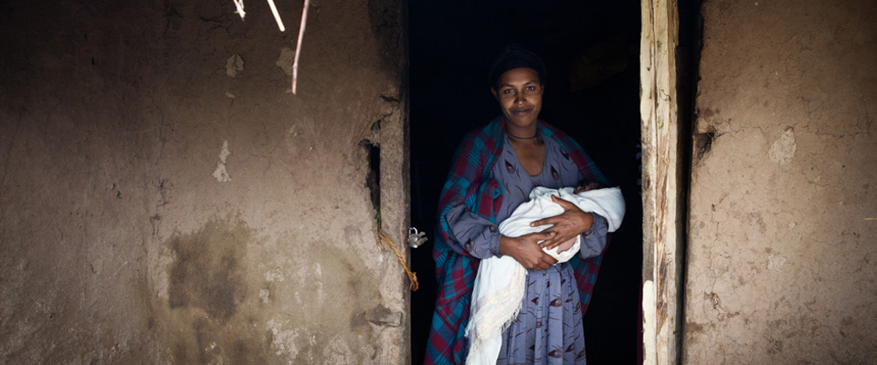

PROJECTS
Kirkwood Tour of Homes email marketing campaign

In the spring of 2015, I developed a 3-part email marketing campaign for Kirkwood’s annual Tour of Homes to help drive online ticket sales. There were some especially stunning historic renovations on this year’s tour, so the organizers were looking to bring in more people from outside the neighborhood.
First, I did some heavy copyediting (read: deleting) to make home descriptions tighter and more compelling. Then I designed a tour webpage with a more prominent call to action that showcased our beautiful architectural photos—we were lucky to have Christopher Martin, a Kirkwood-based photographer, shooting for us.
Spending extra time on copy, arranging for high-quality images, and refining email lists paid off big time. On average, the emails garnered a 40% open rate and a 16% click-through rate. Even better, online ticket sales doubled over the previous year.
ISSS online form + transactional email overhaul
When Emory’s International Student and Scholar Services office first transitioned to a new case-tracking system a few years ago, creating content for e-forms and their associated transactional emails became a virtual free-for-all.
After working with ISSS’s advising teams to relaunch their website in early 2015, we noticed that some information in the e-forms and emails wasn’t consistent with the language on the new site. Users kept getting tripped up at certain steps of an online request process. And even though these emails are one of the most critical ways ISSS interacts with its constituents, they’d been neglected. Their voice and tone were uneven at best.
Since many of these emails are triggered by changes to clients’ immigration records—which can cause a lot of stress and uncertainty—it’s important that the tone is simultaneously friendly, calming, and firm. I worked with ISSS’s subject matter experts to evaluate and rework the content of their online forms and transactional emails, making sure calls to action were crystal-clear to encourage policy compliance, decrease staff time fielding phone questions, and reduce client anxiety.
Kirkwood Spring Fling content strategy
In the spring of 2015, I helped my neighborhood’s annual festival, the Kirkwood Spring Fling, to develop a more integrated web content strategy. One of the first things we did was implement a responsive Wordpress theme and install plugins that give the site’s content more structure. We also added email to the festival's communications arsenal, using MailChimp to create more targeted email campaigns around distinct activities like the 5K race and the BBQ cook-off.
One of the Fling’s greatest assets is that it’s volunteer-run by neighbors who are passionate about Kirkwood. But with its decentralized committee structure, gathering key info and coordinating editorial calendars can be tough. I’m working to establish better-defined workflows for social and web content creation to make that process smoother. But in the meantime, I wrote copy and curated content for Facebook, Twitter and Instagram for the 2015 festival.
Ultimately, overall web traffic traffic increased 90%, with even more dramatic gains in mobile users. Tour of Homes ticket sales doubled, 5K sign-ups increased 31%, and more people came to the festival than ever before.
Kirkwood 5K email marketing campaign

In the spring of 2015, I conceptualized and executed a 4-part email marketing campaign for Kirkwood’s annual 5K road race to help drive runner sign-ups. I built segmented lists in MailChimp, rewrote copy to emphasize race benefits and freebies, and simplified calls to action. Since early registrations make it easier to manage logistics on race day, I created an editorial calendar that scheduled emails and paid social content around registration pricing increases (sample email).
In the end, we saw fabulous numbers: a 51% average open rate and an 11% click-through rate. Most importantly, 23% of email recipients bought a race number, and they accounted for more than a quarter of all race registrants. There were more runners in the 2015 race than ever before, outnumbering the previous year by 31%.
International student website responsive redesign
As part of a site migration to responsive design, I worked with subject matter experts to overhaul the content of Emory’s International Student and Scholar Services website, giving it more structure and reducing the overall page count by a third. The new site went live in February 2015.
I edited page-level copy to explain complex immigration regulations in a clear, concise, friendly way so that users can find the info they need quickly and easily. In one portion of the site, for example, I converted 4 text-only pages across 3 navigation sections to 1 overview page about bringing family to the US, using inset sidebars and tabs to structure content.
Since the new site launched, it's seen 18% more mobile traffic, and the mobile bounce rate has improved 41%.
Global Services website

In the spring of 2014, I co-led a project that brought together a range of resources under one virtual umbrella at global.emory.edu/support. This was a collaborative effort, and I worked closely with the wonderful team at Emory’s Global Health Institute and subject matter experts across the university.
The site acts as a ‘front door’ for faculty who are interested in doing global work, with guidance on everything from traveling abroad, establishing in-country operations, paying foreign nationals—you get the idea.
To do this, we needed to create a one-stop-shop with content from many previously siloed offices, translate highly technical language into plain English, and fill in gaps when we found that some policies or resources didn’t yet exist.